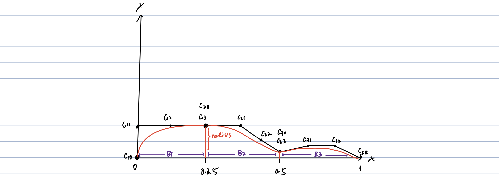
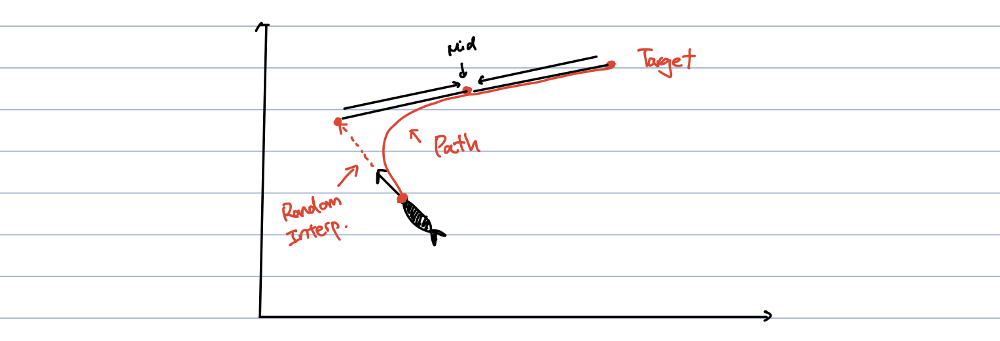
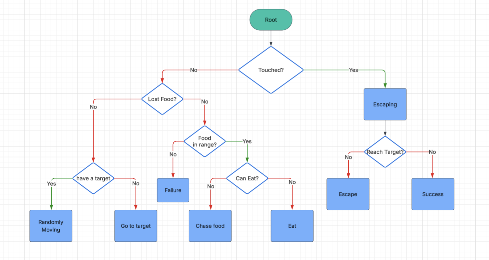

Cubic Bezier Curves
The fish body geometry and motion are generated through cubic Bézier curves, enabling smooth deformation, natural oscillation, and continuous local-to-world pose transformation along a mathematically defined path.
COMPUTER GRAPHICS PROJECT
Overview
The fish body geometry and motion are generated through cubic Bézier curves, enabling smooth deformation, natural oscillation, and continuous local-to-world pose transformation along a mathematically defined path.
A behavior tree governs each fish’s AI, dynamically prioritizing states such as patrol, pursuit, feeding, and escape based on environmental stimuli shared through a blackboard system.
The particle system powers visual effects like water ripples, trails, and fish food, using object pooling and per-instance updates to maintain high performance and lifelike fluidity.
Each fish’s motion is procedurally generated along a cubic Bézier curve, where the curve defines the fish’s silhouette and body deformation. The Bézier function provides relative body height at any position t, which determines the radius of each particle—each fish is composed of 150 particles, and their radii are dynamically calculated based on their positions along the curve. Parameters such as head, body, tail, and tip control the overall proportions, while TailEscalationIndex and TailOscillation modulate wave intensity. The body’s deformation is driven by traveling waves defined by wavelength, frequency, and speed, with orientation updated tangentially along the curve using Mat3 translation and rotation for smooth local-to-world pose transformations.

The auto-pathfinding system continuously updates each fish’s trajectory using a dynamically generated Bézier curve. The control points are defined as follows:
These four points are used to construct a new Bézier matrix in real time, allowing the fish to smoothly adjust its forward path and maintain fluid, natural movement.

The behavior of each fish is governed by a modular behavior tree that manages transitions between different states such as patrolling, pursuing, feeding, and escaping. The system uses a shared blackboard to communicate conditions and environmental inputs, dynamically selecting the appropriate branch based on situational context. This structure allows each fish to react autonomously to stimuli—whether avoiding threats, seeking food, or idly exploring—creating varied and lifelike behavioral patterns within the simulation.

// ========================= Blackboard ==============================
...
// AI BTree Black Board
isTouched: boolean = false;
seeFood: boolean = false;
reachTarget: boolean = false;
canEat: boolean = false;
escapeTargetSetted: boolean = false;
sawFood: boolean = false;
lostFood: boolean = true;
currentFood: FoodParticle = new FoodParticle();
...
// ========================= Behavior Tree ==============================
// Actions
const action_escape = new Action_Escape();
const action_setEscapeTarget = new Action_SetEscapeTarget();
const action_setNewTarget = new Action_SetNewTarget();
const action_patrol = new Action_Patrol();
const action_chaseFood = new Action_ChaseFood();
const action_eatFood = new Action_EatFood();
// Conditions
const condition_reachTarget = new Conditional_ReachTarget();
const condition_touched = new Conditional_Touched();
const condition_escapeTarget = new Conditional_SetTargetEscape();
const condition_sawFood = new Conditional_SawFood();
const condition_lostFood = new Conditional_LostFood();
const condition_canEat = new Conditional_CanEat();
// Default Failure Node
const failureNode = new FailNode()
// Selectors
const targetUpdate_selector = new SelectorNode(
action_setNewTarget,
action_patrol,
[condition_reachTarget]
);
const escapeUpdate_selector = new SelectorNode(
action_escape,
action_setEscapeTarget,
[condition_escapeTarget]
);
const canEat_selector = new SelectorNode(
action_eatFood,
action_chaseFood,
[condition_canEat]
)
const eat_selector = new SelectorNode(
canEat_selector,
failureNode,
[condition_sawFood]
)
const lost_selector = new SelectorNode(
eat_selector,
targetUpdate_selector,
[condition_lostFood]
)
const touch_selector = new SelectorNode(
escapeUpdate_selector,
lost_selector,
[condition_touched]
);
this.BehaviorTree = touch_selector;Each ripple is an expanding ring that grows in tidy, discrete steps. A fixed step size and total step count shape how far it travels, while a small start delay or initial offset lets different ripples fire in a pleasing stagger. A lightweight frame-skip keeps the motion slow and silky instead of racing outward.
As the ring moves, its particles gently fade and shrink—opacity and size taper linearly so the ripple feels natural. You can loop the effect for a continuous pulse, or let it finish once and quietly disable itself to avoid extra work.
Every frame we place a set number of instanced particles evenly around the circle (uniform angles). We only update per-instance position, scale, and alpha—no geometry rebuilds—so frame rate stays high even with lots of overlapping ripples.
The fish food system operates as a circular particle pool. We allocate 50 particles in total, but players can only spawn up to 20 visible particles at once.
Active particles are tracked in a list, and each has a health value. When a particle’s health drops below zero, it’s reset and recycled back into the pool, ensuring smooth performance and continuous reuse.
timeUpdate(t: number, ...args:any[]) {
super.timeUpdate(t, ...args);
let deltaTime:number = t - this.lastUpdateTime;
// Updating Fish Food Particles
for (let i = 0; i < this.particleQueue.length; ++i) {
let p = this.particleQueue[i];
p.life -= deltaTime;
p.color.a = p.life/p.maxLife;
p.radius = p.maxRadius * (p.life/p.maxLife);
// Circulate particles back to the pool when their life expires
if (p.life < 0){
p.life = p.maxLife;
p.visible = false;
let temp = this.particleQueue[this.particleQueue.length - 1]
this.particleQueue[this.particleQueue.length - 1] = p;
this.particleQueue[i] = temp;
this.particleQueue.pop()
}
}
this.signalParticlesUpdated();
this.lastUpdateTime = t;
}